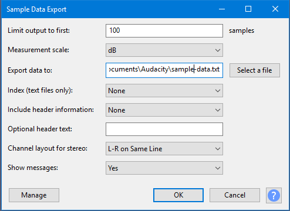

Sample Data Export
See also the companion tool Sample Data Import.
- Accessed by:
- 
Limit output to first <n> samples
- The number of samples processed will be the number of samples in the selection, up to a maximum of the number entered here. The default number of samples is 100.
- Sample Data Export is limited internally to an absolute maximum of 1 million samples.
- Processing a large number of samples can create extremely large output files that may be difficult to open. Word processing application such as WordPad can usually open large TXT files, but for HTML output it is advisable to limit the number of samples to a maximum of a few hundred samples.
- The track sample rate as indicated on the Track Control Panel indicates the number of samples per second. If the track and project rates are the same, the number of samples in a selection may be viewed in Selection Toolbar if you choose one of the selection formats that includes samples.
Measurement scale
- dB: Sample values are displayed on a dB scale relative to full scale (as in the Waveform (dB) view)
- Linear: Values are displayed on a linear scale +/- 1 (as in the Audacity audio track Waveform view).
Export data to
The file path and location to export the data to. Using the button is the recommended way to choose the output file destination. The file path text may also be typed or edited manually, though care needs to be taken to avoid entering an invalid path.
Output folder
The default output folder is normally:
- Windows: <root>\Users\<username>\Documents\Audacity\sample-data.txt
- Mac: /Users/<username>/Documents/sample-data.txt
- Linux: /home/<username>/Documents/sample-data.txt
On Linux, the abbreviation ~/ may be used for the home directory.
Index (text files only)
Three options are available:
- None: [default] Sample values are listed without an index.
- Sample Count: The first column of the output text counts the number of samples, starting at "1" for the first selected sample.
- Time Indexed: The first column of the output text shows the time index of each sample, relative to the first sample.
Example of time indexed text output for a mono track:
0.00000 -76.01008 0.00002 -26.00002 0.00005 -19.99649 0.00007 -16.50316
File data format
"Sample Data Export" supports exporting as plain text (TXT), comma separated values (CSV) or as a web page (HTML). The format is automatically selected based on the file extension of the exported file. The default format is plain ASCII text.
Data in your chosen format as listed below appears after any header information which you included. Text files where the output produces columns may not have perfectly lined-up columns due to formatting limitations of text files.
- Sample List (txt): produces a plain text file with a list of sample values.
- Indexed List (txt): produces a plain text file with an indexed list of sample values: sample number followed by sample value.
- Time Indexed (txt): produces a plain text file with the time (relative to the start of the selection) followed by sample value
- Data (csv): produces a CSV formatted file. This may be suitable for importing into spreadsheet applications for further analysis.
- Web Page (html): produces an HTML 5 document that contains all of the header information and a table of sample data with sample number, time, linear and dB values. Web browsers that are not HTML 5 compliant may not display the page correctly.
Include header information
- None: Prints only the sample data, preceded by any text you entered in the optional header text box (leave blank for none).
- Minimal: Prints a minimal header that contains:
- Sample rate
- Units (linear or dB)
- Optional header text (leave blank for none)
- Standard: In addition to the Minimal header information, the following is also included:
- File name
- Number of samples
- Duration (seconds)
- Mono or stereo
- All: In addition to the Standard header information, the following is also included:
- Peak amplitude (linear and dB)
- Unweighted RMS level (dB)
- DC offset
Optional header text
This is provided for adding notes to the output file. In text files, use ~% to start a new line, or in HTML files use <br>.
Channel layout for stereo
For TXT and CSV files, provides a layout choice for stereo tracks.
- L-R on Same Line: Prints a list of alternate left channel sample followed by right channel sample. For .CSV files this will produce a column of sample values for each channel:
1 0.59528 1 0.59528
...
2 0.56063 2 0.56063
3 0.52377 3 0.52377
- Alternate Lines: Prints a sample value from the left channel followed by a sample value from the right channel on the same line:
1 0.59528
...
1 0.59528
2 0.56063
2 0.56063
3 0.52377
3 0.52377
- L Channel First: All the left channel samples are listed, followed by all of the right channel samples. For .CSV files this will produce a row of values for each channel:
Left Channel.
1 0.59528
2 0.56063
3 0.52377
...Right Channel.
1 0.59528
...
2 0.56063
3 0.52377
Show messages
- Yes: (default) Confirmation, error and warning messages will be shown after processing.
- Errors Only: Only error messages will be shown after processing.
- None: No messages will be shown after processing.
| It may be useful to disable confirmation messages if Sample Data Export is to be used in a Chain for batch processing. |
Buttons
Clicking on the command buttons give the following results:
- gives a dropdown menu enabling you to manage presets for the tool and to see some detail about the tool. For details see Manage presets
- applies the effect to the selected audio with the current effect settings and closes the dialog
- aborts the effect and leaves the audio unchanged, closing the dialog
 brings you to the appropriate page in the Manual, this page
brings you to the appropriate page in the Manual, this page